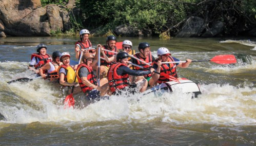

Na White Water Rafting, nosso objetivo é proporcionar aventuras emocionantes e seguras, conectando pessoas à natureza por meio de experiências inesquecíveis. Nossa missão é oferecer passeios com excelência, respeito ao meio ambiente e compromisso com a segurança. Nosso lema é: "Aventura, segurança e natureza em cada remada."